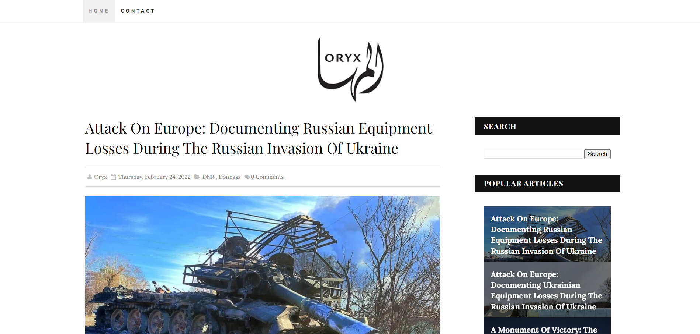
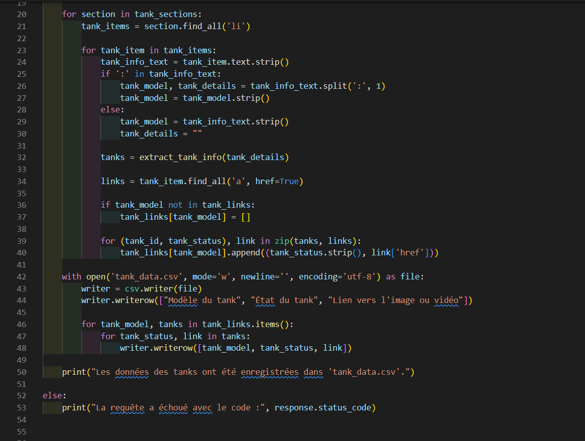

Description du projet
Ce projet a pour objectif d'automatiser l'extraction d'informations sur les tanks à partir d'une page web spécifique, en fournissant un support analytique pour le secteur militaire. Les données extraites incluent les modèles de tanks, leur état, ainsi que des liens vers des ressources multimédias (images ou vidéos).

Le script Python utilise les bibliothèques requests et BeautifulSoup pour récupérer et analyser le contenu HTML de la page.
Les informations sont ensuite sauvegardées dans un fichier CSV, facilitant ainsi leur réutilisation.
Fonctionnement du script
Le script commence par récupérer le contenu de la page via une requête HTTP, puis utilise BeautifulSoup pour naviguer dans la structure HTML.
Ensuite, une fonction dédiée, extract_tank_info, applique des expressions régulières pour extraire les détails des tanks.
import requests
from bs4 import BeautifulSoup
import csv
import re
URL = "https://www.oryxspioenkop.com/2022/02/attack-on-europe-documenting-equipment.html"
response = requests.get(URL)
if response.status_code == 200:
soup = BeautifulSoup(response.content, 'html.parser')
# Extraction logic here...
else:
print("Erreur lors de la récupération des données")Les informations sont ensuite stockées dans un dictionnaire, puis exportées vers un fichier CSV pour une analyse approfondie.
Résultats et Analyse
Les données extraites comprennent :
- Modèles de tanks
- État des tanks
- Liens vers des images ou vidéos des tanks
Ces résultats permettent d'avoir une vue d'ensemble sur les équipements militaires documentés, avec des informations détaillées sur chaque unité.
Télécharger le fichier CSV